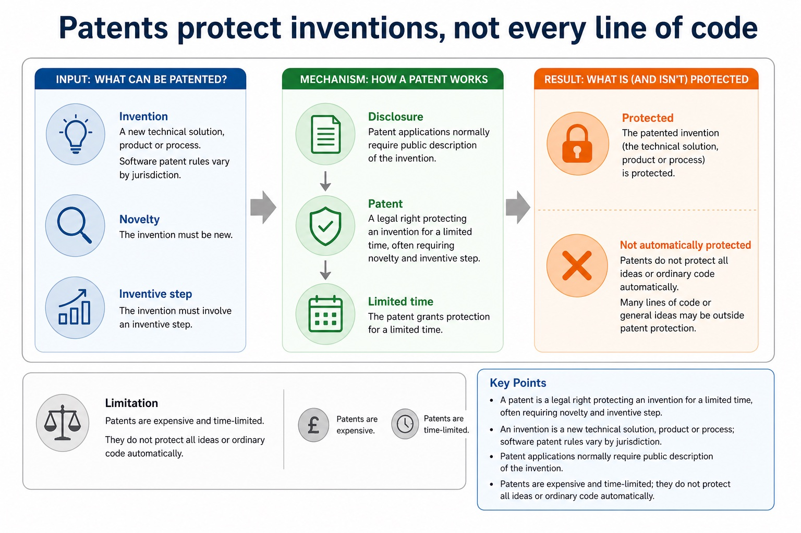
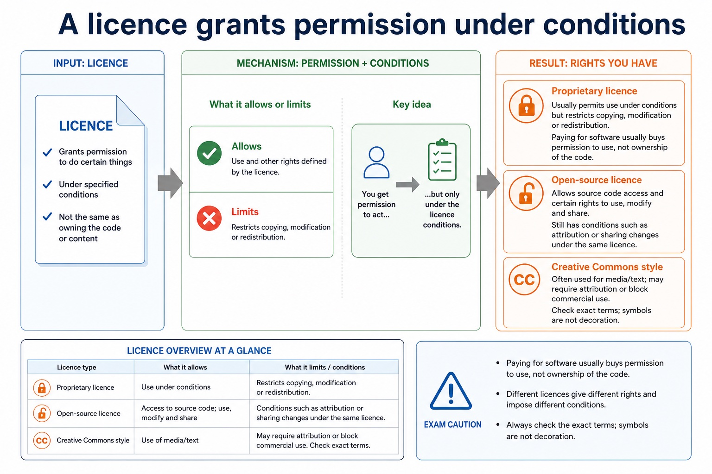
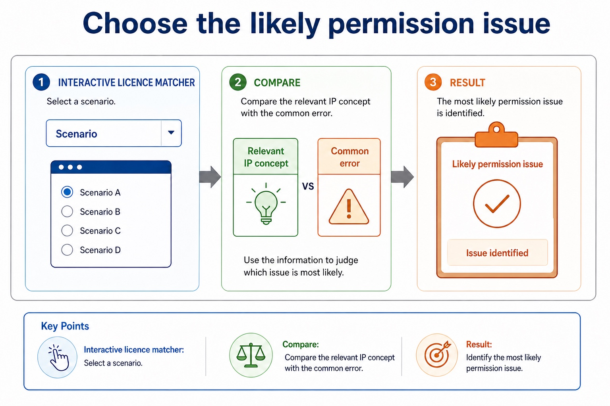

Lesson 074 | 45 minutes | Paper 1 Section 7 | Ethics and ownership
If you can download it, that does not mean you own it.
Intellectual property protects creations of the mind. In Computer Science this includes
software code, algorithms, designs, documentation, media and inventions. The exam skill is
to distinguish ownership, copyright, patent protection and licence conditions.
Defineintellectual property, copyright, patent and licence
Distinguishownership from permission to use, copy or modify
Applylicensing and infringement ideas to computing scenarios
Who created it?Who owns it?What is protected?What licence applies?What use is allowed?What is infringement?
A licence is not a decorative scroll. It is the rulebook you agreed to read later.
Why this matters
Exam answers need legal/ethical vocabulary plus consequences: infringement, loss of revenue, liability, attribution or licence breach.
Common trap
Free to download does not always mean free to reuse commercially, modify or redistribute.
Warm-up hook
A student copies code from an online repository into coursework. The repository is public. Is the copying automatically allowed?
Public code is like a glass shop window: visible, not automatically yours to carry home.
Choose one. Look for ownership and permission, not just visibility.
Knowledge point 1
Intellectual property protects created ideas and expressions
Intellectual propertyCreations of the mind that may be legally protected, such as software, designs and inventions.OwnerThe person or organisation holding legal rights to control use of the work.InfringementUsing protected work without permission or outside licence conditions.AttributionGiving credit to the creator or source when required.
Intellectual property protects created ideas and expressions
Intellectual property protects created ideas and expressions: source-grounded visual explanation.
Lesson fact: Intellectual property Creations of the mind that may be legally protected, such as software, designs and inventions.
Lesson fact: Owner The person or organisation holding legal rights to control use of the work.
Lesson fact: Infringement Using protected work without permission or outside licence conditions.
Lesson fact: Attribution Giving credit to the creator or source when required.
Knowledge point 2
Copyright protects expression, including software code
CopyrightProtects original expression such as source code, documentation, graphics or text.Automatic protectionCopyright usually exists when the work is created; registration is not always needed for protection.Restricted actsCopying, distributing, adapting or using beyond permission can breach copyright.Fair use/dealing cautionExceptions are limited and context-specific; do not assume every educational use is allowed.
Copyright protects expression, including software code
Copyright protects expression, including software code: source-grounded visual explanation.
Lesson fact: Copyright Protects original expression such as source code, documentation, graphics or text.
Lesson fact: Automatic protection Copyright usually exists when the work is created; registration is not always needed for protection.
Lesson fact: Restricted acts Copying, distributing, adapting or using beyond permission can breach copyright.
Lesson fact: Fair use/dealing caution Exceptions are limited and context-specific; do not assume every educational use is allowed.
Knowledge point 3
Patents protect inventions, not every line of code
PatentA legal right protecting an invention for a limited time, often requiring novelty and inventive step.InventionA new technical solution, product or process; software patent rules vary by jurisdiction.DisclosurePatent applications normally require public description of the invention.LimitationPatents are expensive and time-limited; they do not protect all ideas or ordinary code automatically.
Patents protect inventions, not every line of code

Patents protect inventions, not every line of code: source-grounded visual explanation.
Lesson fact: Patent A legal right protecting an invention for a limited time, often requiring novelty and inventive step.
Lesson fact: Invention A new technical solution, product or process; software patent rules vary by jurisdiction.
Lesson fact: Disclosure Patent applications normally require public description of the invention.
Lesson fact: Limitation Patents are expensive and time-limited; they do not protect all ideas or ordinary code automatically.
Knowledge point 4
A licence grants permission under conditions
Licence idea
What it allows or limits
Exam caution
Proprietary licence
Usually permits use under conditions but restricts copying, modification or redistribution.
Paying for software usually buys permission to use, not ownership of the code.
Open-source licence
Allows source code access and certain rights to use, modify and share.
Still has conditions such as attribution or sharing changes under the same licence.
Creative Commons style
Often used for media/text; may require attribution or block commercial use.
Check exact terms; symbols are not decoration.
A licence grants permission under conditions

A licence grants permission under conditions: source-grounded visual explanation.
Lesson fact: Licence idea
Lesson fact: What it allows or limits
Lesson fact: Exam caution
Lesson fact: Proprietary licence
Lesson fact: Usually permits use under conditions but restricts copying, modification or redistribution.
Lesson fact: Paying for software usually buys permission to use, not ownership of the code.
Lesson fact: Open-source licence
Lesson fact: Allows source code access and certain rights to use, modify and share.
Lesson fact: Still has conditions such as attribution or sharing changes under the same licence.
Lesson fact: Creative Commons style
Lesson fact: Often used for media/text; may require attribution or block commercial use.
Lesson fact: Check exact terms; symbols are not decoration.
Knowledge point 5
Do not confuse protection type with permission type
Concept
Protects / controls
Common misconception
Copyright
Original expression, including source code and media.
Changing a few names does not automatically avoid infringement.
Patent
An invention or technical process for a limited time.
Not every software idea or algorithm is patentable.
Licence
Permission to use protected work under conditions.
A licence does not always transfer ownership.
Ownership
Legal control over rights to the work.
Using software is not the same as owning its source code.
Do not confuse protection type with permission type
Do not confuse protection type with permission type: source-grounded visual explanation.
Lesson fact: Protects / controls
Lesson fact: Common misconception
Lesson fact: Copyright
Lesson fact: Original expression, including source code and media.
Lesson fact: Changing a few names does not automatically avoid infringement.
Lesson fact: An invention or technical process for a limited time.
Lesson fact: Not every software idea or algorithm is patentable.
Lesson fact: Permission to use protected work under conditions.
Lesson fact: A licence does not always transfer ownership.
Lesson fact: Ownership
Lesson fact: Legal control over rights to the work.
Lesson fact: Using software is not the same as owning its source code.
Interactive licence matcher
Choose the likely permission issue
Select a scenario and compare the relevant IP concept with the common trap.
Choose the likely permission issue

Choose the likely permission issue: source-grounded visual explanation.
Lesson fact: Interactive licence matcher
Lesson fact: Select a scenario and compare the relevant IP concept with the common trap.
Lesson fact: Scenario
Interactive IP decision checker
Does this use sound permitted?
Worked examples
Four model answers for IP and licensing scenarios
Practice with instant checking
Check core vocabulary before writing scenario answers
Mistake debugging
Fix IP answers that confuse access, ownership and permission
Exam-style questions
Cambridge-style IP questions with expandable MS
Attempt first. Then open the mark scheme and check whether your answer uses precise IP vocabulary and scenario consequences.
Extra practice
FSF, OSI and software freedoms
The Free Software Foundation focuses on freedoms to run, study, modify and share software; source access is necessary for study/modification. The Open Source Initiative approves licences meeting open-source criteria, including source availability and rights to redistribute/modify.
Free/open-source does not necessarily mean zero price or no copyright. Copyright holders grant permissions through a licence, which may impose conditions such as preserving notices or sharing derivative source under the same terms.
Worked example: Modify a library
An OSI-approved licence may permit source modification and redistribution. A copyleft licence may require distributed derivative work to use compatible terms; exact obligations depend on the licence.
Targeted practice
1. Which organisation emphasises four software freedoms?
Show answer
Free Software Foundation (FSF).
2. Why is source code needed to study and modify software?
Show answer
Executable code alone is not a practical human-readable basis for modification.
3. Can open-source software be sold?
Show answer
Yes; open source concerns licence rights, not necessarily zero price.
Exam-style question
4 marks
Explain why open-source software is still protected by copyright and how a licence changes what users may do.
Show MS
B1 creator/copyright holder retains copyright
B1 licence grants specified permissions
B1 may allow source inspection/modification/redistribution
B1 users must follow licence conditions
Summary
IP and licensing in six exam-ready ideas
IPProtects creations such as software, media, designs and inventions.
CopyrightProtects original expression, including source code.
PatentProtects inventions for a limited time if requirements are met.
LicenceGives permission under conditions; it may not transfer ownership.
InfringementUsing protected work without permission can breach rights or licence terms.
Exam habitSay what is protected, what use is allowed and what consequence follows.
Homework
Practise permission-based reasoning
Task 1: Licence auditFind three software/media items you use. For each, state owner/source, licence or terms, allowed use, restricted use and attribution requirement.Task 2: Rewrite a weak answerRewrite: "It is online so anyone can copy it." Add ownership, copyright/licence condition, possible infringement and consequence.Task 3: Timed responseAnswer in 8 minutes: "A company uses code from an online repository in a commercial product. Discuss IP and licensing issues." Include at least three precise terms.